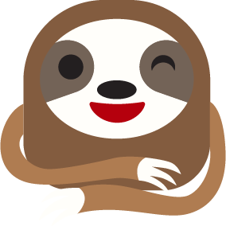

<ion-content [fullscreen]="true">

  <div id="container">
    <div style="margin-right: 15%; margin-left: 15%;">
      <strong >
        Você pode acompanhar sua evolução em ficar "De Boas"
        com as nossas estatísticas inteligentes
       </strong>
      
    </div>
    <ion-button color="primary" class="margin-top-25" style="font-size: x-large;"
    (click)="_quarta_tela()
    ">
      Próximo</ion-button>
  </div>
</ion-content>
